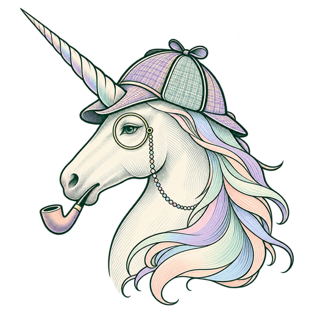

Model freedom
Choose the right local or connected model for each task instead of being locked to one provider.
AI SOFTWARE ·HOSTED SERVICES ·HUMAN DIRECTION
Tethered Unicorn Labs builds software that helps people turn questions into research and ideas into completed work. Unicorn Forge brings AI agents, tools, and project context together. TraceWell turns public-source research into organized, reviewable evidence. Our next step is hosted software that makes those capabilities easier to access.
01 / THE LAB
We believe the next generation of personal computing will be adaptive, model-flexible, and capable of meaningful action. Software should learn the individual or company it serves while preserving agency and showing its work.
Our focus is software as a service: useful applications delivered and operated by Tethered Unicorn Labs. Customers should be able to focus on their work while we manage the service, improve the product, and make its capabilities easier to use.
02 / SOFTWARE SUITE · AUTOMATION
INTRODUCING
An AI workspace for coordinating models, agents, tools, and project knowledge. Forge is designed to plan tasks, act through connected tools, and make results available for review.
Explore the dedicated Forge page →Choose the right local or connected model for each task instead of being locked to one provider.
See commands, tool results, failures, approvals, and verification while agents work.
Organize projects, files, conversations, skills, and approved memories around the individual.
Bring research, writing, development, and repeatable tasks into one workspace with visible progress and reviewable results.
03 / SOFTWARE SUITE · RESEARCH
INTRODUCING
Start with what you know. Build a clearer picture.
A conversational workspace for open-source intelligence: research using publicly available information. TraceWell helps refine a question, gather sources, and organize findings into a case you can review.
Early testing · Findings are research leads for human review.

04 / OUR PRINCIPLES
Explain where processing happens, how information is used, and what users can control. Hosting is a delivery model; responsible handling of data is a product obligation.
An agent should verify what happened and admit what did not—not simply announce success.
Friendly interfaces, thoughtful interactions, and moments of delight can make difficult technology easier to understand and explore.
Powerful automation needs visible activity, scoped permissions, interruption, and recovery.
05 / COMPANY
Tethered Unicorn Labs is an early-stage software company developing AI applications for individuals and organizations. Our focus is useful automation, conversational research, and hosted services that reduce the work required to get value from AI.
Unicorn Forge and TraceWell lead our software suite. We are developing a SaaS offering operated by Tethered Unicorn Labs, with subscription packaging and service capacity still to be validated. UniCrypt continues as a complementary hardware research project.
06 / INVESTORS & COLLABORATORS
We are preparing a 90-day software pilot for January–April 2027, subject to readiness. We welcome prospective paid design partners, practical sponsors, and early investor conversations. The focus is a useful customer workflow, dependable delivery, repeat use, and measured operating costs. Preparation and software validation continue through the end of 2026.
Have a workflow to improve? Discuss a pilot or explore sponsorship.